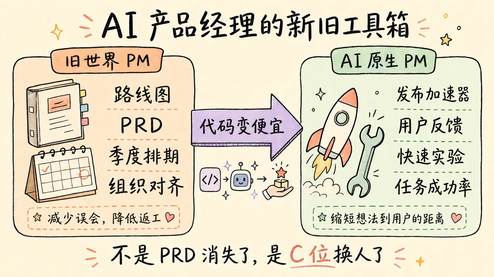
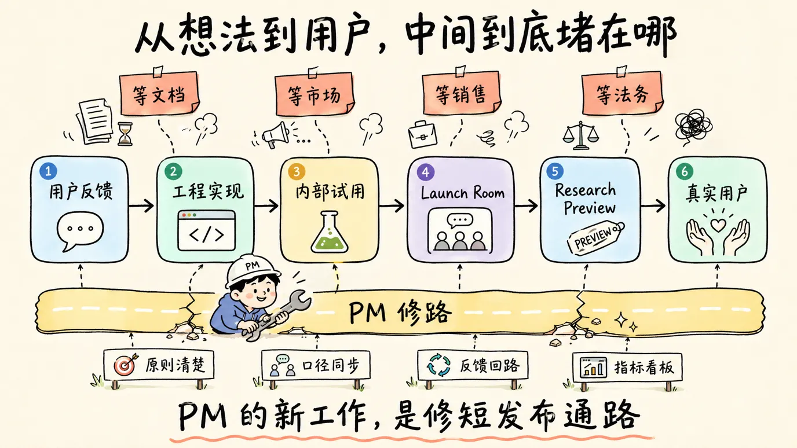
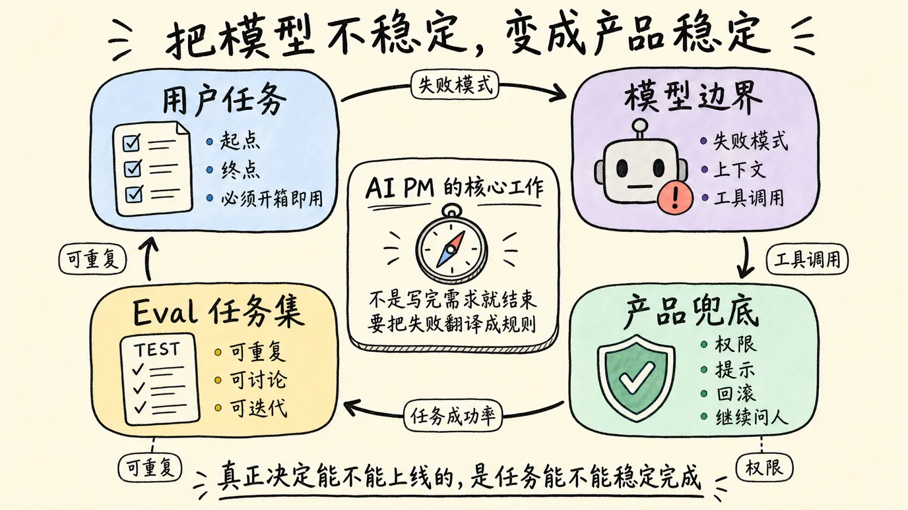
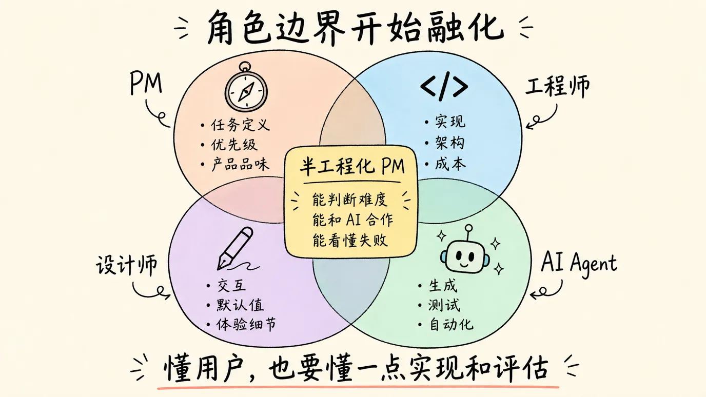
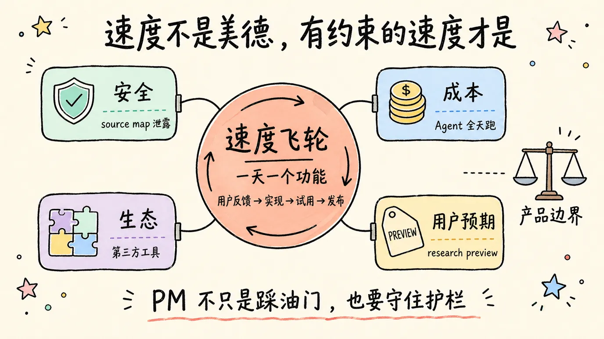
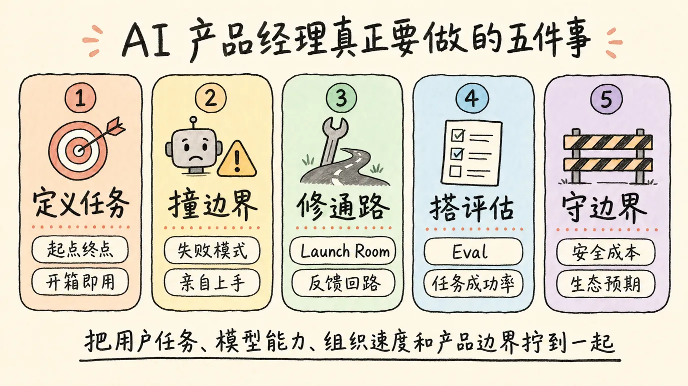

这两天刷到 Cat Wu 那期访谈，脑子里一直有个问题没散。
AI 产品经理到底应该干什么？
这问题听起来像招聘面试题，但越想越觉得，它其实是在问所有做产品的人，你手里那套吃饭工具，还剩多少有效。
Cat Wu 是 Anthropic 里负责 Claude Code 和 Cowork 的产品负责人，和 Boris Cherny 一起推这两个产品。她在 Lenny 的播客里讲了很多 Anthropic 内部的速度文化，讲他们怎么把一些功能的交付周期，从过去动辄几个月，压到一周，甚至一天。
这当然很炸。
但我真正被刺到的，不是一天发一个功能这种爽文数字。说真的，这种数字听多了，很容易变成另一种 AI 鸡血。
真正有意思的是，她说自己面试了几百个想做 AI 产品经理的人，但绝大多数人对这个岗位的理解，仍然停留在旧世界。
我第一反应是，完了。
因为这不是在说别人。
大部分 PM 的职业训练，确实就是旧世界训练。我们习惯做路线图，写 PRD，拉齐研发、设计、市场、销售的预期，把需求拆成版本，把版本排进季度，把季度包装成一个看起来很有掌控感的计划。
这套东西以前没错。
在代码昂贵、发布慢、组织协作成本高的年代，PM 的价值很大一部分就是减少误会，降低返工，让很多团队沿着同一张地图往前走。你写得越清楚，会议开得越严谨，路线图排得越稳，组织越安心。
但问题是，AI 把这张地图撕开了。
以前一个功能要做六个月，所以 PM 有充分理由花几周定义它、协调它、包装它。现在一个工程师周五晚上看到用户吐槽，周末就能让 Claude Code 搭出一个可用版本，周一就能扔给真实用户试。
那 PM 还在那里写一份四十页 PRD，就有点尴尬了。
不是 PRD 没价值。
是它不再天然占据 C 位。

Cat 讲的最核心一句话，大意是，AI 原生产品里最好的 PM，是能缩短从想法到用户手里的距离的人。
这句话我觉得很准。
你想想看，旧世界的 PM 很像路线图经理。AI 时代的 PM，更像发布加速器。
不是自己冲到前面，把所有事情都做了。而是把团队里那些会拖慢速度的摩擦，一层一层拆掉。
Anthropic 里面有个挺有意思的机制，叫 evergreen launch room。工程师觉得一个功能内部试得差不多了，就丢到这个频道里。文档、产品营销、开发者关系的人直接跳进来，第二天就能把发布材料补齐。
这个细节很小，但我觉得特别关键。
因为它回答了一个很现实的问题，为什么有些团队用 AI 之后还是慢。
不是模型不够强，也不是工程师不会用 Cursor 或 Claude Code，而是想法到用户之间的路太堵。功能写好了，等文档。文档写好了，等市场。市场想发，又等销售确认口径。销售确认完，法务又说这句话不能这么写。
结果一个本来两天能试出来的东西，在组织里泡成了两个月。
这时候 PM 该干的事，不是把 PRD 写得更像论文，而是修路。
把发布流程修短，把决策边界修清楚，把团队原则写到每个人都能自己判断，把指标看板做成所有人每周都能共同读懂的东西。
说真的，这比写 PRD 难多了。
因为写 PRD 至少有模板。
修组织没有模板。

Cat 还提到 Claude Code 里很多功能会用 research preview 的方式发出来。这个词挺妙，它本身就是一种产品机制。它告诉用户，这是早期想法，我们要收反馈，它可能不会永远存在。
这就把发布承诺降下来了。
你不能一边要求团队一天出功能，一边又要求每个功能都像十年老产品一样完整、稳定、永远兼容。那是不可能的。速度不是凭空长出来的，它一定需要一个承接不完美的容器。
research preview 就是这个容器。
它给用户预期，也给团队空间。用户知道自己参与的是早期实验，团队也敢把还没完全打磨好的东西拿出去接受真实反馈。
回到 AI 产品这块，这个东西尤其重要。
因为 AI 产品最烦人的地方就在于，它不是传统软件。
传统软件的边界相对清楚。按钮点下去，接口返回什么，状态怎么变化，大部分时候是确定的。AI 产品不是。模型有时候聪明得吓人，有时候又蠢得非常稳定。你以为它会的，它偏偏不会。你以为它不会的，它突然又给你来一手。
这就把 PM 的工作，从定义功能，变成了定义模型能力和用户任务之间的那个接口。
更具体一点，PM 要知道三件事。
用户到底要完成什么任务，哪些步骤必须开箱即用。
模型现在到底卡在哪里，失败模式是什么。
产品要用什么样的界面、流程、权限、提示、评估和兜底，把模型的能力包成一个人能放心使用的东西。
这就是我觉得 Cat 那期访谈里最有价值的部分。
她说自己会花大概 30% 的时间，故意把 Cowork 推到极限，和模型对话，搞清楚它为什么失败。
这句话听起来很朴素，但其实非常反直觉。
很多 PM 还是习惯站在用户故事那边写需求。用户想要什么，场景是什么，流程是什么，竞品怎么做。然后把需求丢给工程和算法。
但 AI 产品不是这样玩的。
AI 产品里，模型的失败模式本身就是需求输入。你不亲自去撞模型的边界，就不知道产品应该长什么样。
比如 Cowork 这种东西，官方定义是帮知识工作者处理完整任务，而不是只回答单次提示。它要在本地文件、文件夹和日常应用之间移动，整理材料，合成信息，产出交付物。
这听起来很美。
但中间全是坑。
它怎么知道哪些文件重要？怎么处理权限？怎么判断用户真正想要的是一份草稿，还是一个可以直接发给客户的版本？它什么时候该继续自己做，什么时候该停下来问人？它把 Slack、Gmail、Google Drive、日历这些上下文接进来之后，哪些信息能用，哪些信息不能碰？
这些都不是传统 PRD 里写一句「支持多源数据整合」就解决的。
你得真的把它当同事用。
用到它让你惊喜，也用到它让你崩溃。然后把那些惊喜和崩溃，翻译成产品里的规则、默认值、权限设计、评估集、失败提示和发布边界。
这时候 PM 的新能力就出来了。
不是会不会写 prompt。
是会不会把模型的不稳定，变成产品系统里的稳定。
我有时候觉得，AI 产品经理未来最重要的文档，可能不是 PRD，而是 eval。
当然不是说 PRD 没了。特别模糊的方向，重基础设施的项目，还是需要一页纸把目标、理想状态、失败模式讲清楚。但很多时候，真正能决定产品能不能上线的，不是那页纸写得多漂亮，而是一组具体任务跑下来，模型到底过不过。
这个功能必须在哪些场景开箱即用？
这些场景的输入长什么样？
可接受输出是什么？
失败时用户能不能理解，能不能修正，能不能继续推进？
你看，这已经很像产品版测试用例了。
以前 PM 争的是范围，AI PM 争的是任务成功率。
以前 PM 盯的是功能有没有做完，AI PM 盯的是用户有没有真的完成一件事。

这也是为什么 Cat 会反复强调 product taste。
产品品味这个词很玄，我以前其实挺烦它，因为很多时候它会被用来包装一种不可解释的审美权力。老板说你没有品味，你也不知道怎么反驳，毕竟这玩意没法用尺量。
但放到 AI 产品里，我反而更能理解它了。
因为当代码越来越便宜，写什么就变得更贵。
不是贵在工时，而是贵在判断。
一个模型可以帮你一天做出十个功能，但到底哪一个值得做？哪一个会改变用户的工作流？哪一个只是看起来很炫，但两周后没人打开？哪一个现在做太早，模型撑不住？哪一个现在不做，再过一个模型版本你就落后了？
这些判断，不能完全外包给模型。
至少现在不能。
Cat 讲了一个很有意思的概念，恰好正确程度的 AGI 信仰。
太相信 AGI，你会直接为终局产品设计。反正未来模型什么都会，那产品最好只有一个输入框，用户说一句话，所有事情自动完成。
听起来很性感。
也很容易做成空气。
太不相信 AGI，你又会被今天的模型能力锁死。到处加按钮，到处加流程，到处加人工确认，把一个本来可能由模型承担的任务，切成十几个机械步骤。等下个模型版本一上来，你会发现自己刚做完的复杂设计，突然全都显得过时。
所以最难的是中间。
你要站在今天的模型边界上，看见一个月后的产品形态。不是五年后，也不是昨天。
这就是 AI PM 最痛苦的地方。
技术地面一直在动。你今天定义的最佳实践，可能下个月就变成产品包袱。你今天觉得必须显式展示的中间步骤，可能下个版本模型自己就能处理。你今天觉得模型绝对做不了的事，过两周突然可以了。
PM 过去最喜欢确定性。
AI 时代偏偏不给你确定性。
所以 PM 的价值，变成了在不确定里保持足够快的学习速度。
这里面还有一个特别现实的变化，就是角色边界开始融化。
Cat 说 Anthropic 的很多 PM 有工程背景，Claude Code 团队里不少 PM 也直接写代码，设计师也能提交前端。她甚至说，团队最高效的模式，是有产品品味的工程师，从看到用户反馈开始，到周末把功能发出去，几乎不用 PM 参与。
这话对 PM 来说，挺扎心的。
但我觉得不能逃。
如果一个工程师既理解用户，又能判断产品，又能用 Claude Code 快速实现，那传统 PM 卡在中间的价值就会被压缩。你不能只靠「我负责协调」活下去，因为很多协调会被更快的工具、更小的团队、更清晰的原则吃掉。
当然，这不是说 PM 都要变成工程师。
但 AI 产品经理至少要有工程直觉。
你不一定要写出最优雅的代码，但你要知道一件事大概有多难。你要知道为什么某个看起来简单的需求，会牵扯权限、延迟、成本和安全。你要知道一个 Agent 任务为什么会在上下文、工具调用、文件读写和回滚上出问题。
否则你没法排优先级。
更麻烦的是，你也没法和 AI 合作。
愚钝如我，这半年越来越强烈地感觉到，AI 把很多岗位都往「半工程化」方向推了一把。写作者要懂一点信息结构，运营要懂一点自动化，PM 要懂一点实现和评估。
不是为了炫技。
是因为工具链变了，你不懂它，就只能在它外面指挥。
而在 AI 原生团队里，站在外面指挥的人，会越来越少。

不过 Cat 这套东西，也不能只看热闹。
Anthropic 的速度文化很迷人，但它的阴影也很明显。
Claude Code 源码通过 npm source map 泄露这件事，就很有代表性。按照 Cat 在访谈里的说法，这是流程失败，不是单个人的问题，团队也没有因为这件事把相关人员开掉。
这个姿态我认可。
出了问题先补系统，而不是祭天一个员工，这当然是成熟组织该做的事。
但另一面也得说清楚。
当一家把安全放在品牌核心位置的公司，一边讲一天发功能，一边又连续出现信息泄露，外界当然会问，速度文化有没有把防线压薄。
这个问题不能靠一句流程失败带过去。
速度不是美德。
有约束的速度才是。
OpenClaw 的争议也是一样。Cat 从容量和成本角度解释，为什么 Anthropic 要优先保障自家产品和 API，这个逻辑可以理解。Agent 全天跑起来，token 消耗确实不是普通聊天能比的，一个订阅套餐很难无限承接这种用法。
但社区不舒服的地方，也不只是成本。
大家在意的是时间点和姿态。第三方工具先帮生态把需求跑出来，自家产品随后长出类似能力，再收紧订阅通道。哪怕商业上合理，情感上也会留下刺。
这就是 AI 产品经理另一个很现实的工作。
你不只是在做功能。
你还在设计生态关系。
尤其是 Agent 产品，边界天然会往外扩。它要接文件，要接应用，要接 API，要进入用户的工作流。你今天的一个权限策略、计费策略、第三方接入策略，都会影响开发者和用户对你的信任。
如果只从内部效率看，很容易觉得这些都是商业决策。但从产品角度看，这些东西本身就是用户体验。
价格是体验。
限制是体验。
封堵也是体验。
所以 AI PM 不能只会讲速度，也要能讲边界。

说到这里，我反而觉得，AI 产品经理到底应该干什么，答案没有那么玄。
第一，定义任务。
不是定义功能列表，而是定义用户真正要完成的任务。这个任务的起点是什么，终点是什么，哪些结果必须开箱即用，哪些地方可以先 research preview。
第二，撞模型边界。
不要只听算法同学讲模型能力，也不要只看 demo。自己上手，把产品推到极限，记录它为什么失败。AI 产品里的失败模式，不是 QA 阶段才出现的 bug，而是产品定义的一部分。
第三，修发布通路。
如果工程师两天能做出东西，组织却两个月发不出去，那 PM 就该去修组织。文档、营销、销售、法务、客服、指标、反馈回路，哪里慢就修哪里。
第四，搭评估系统。
把「感觉还不错」变成可重复的任务集，把产品品味的一部分变成可以讨论、可以复现、可以迭代的标准。不要只问模型会不会，要问在真实用户任务里，稳定到什么程度才算能交付。
第五，守住边界。
速度、成本、安全、生态、用户预期，这些东西都要有人放在同一张桌子上看。AI 产品的诱惑太大了，太容易一路狂奔。PM 如果只负责踩油门，那这个岗位就太轻了。

我自己越想越觉得，AI 产品经理的价值不是消失了，而是变脏了。
以前 PM 很多时候像一个文档和会议的中心节点。现在更像一个混在泥地里修路的人。今天看用户反馈，明天写一点代码，后天跑 eval，大后天拉 launch room，周末还得自己把模型用到崩溃。
体面少了很多。
但可能更接近产品的原点。
产品经理这个岗位，最初不就是为了让正确的东西，更快、更稳地到用户手里吗？
只是过去很多年，我们把中间那些工具，当成了工作本身。路线图、PRD、评审会、排期、项目管理，这些东西有用，但它们不是目的。
AI 把代码变便宜之后，终于逼着大家重新看这件事。
当写代码不再是最大瓶颈，决定写什么、怎么验证、怎么发布、怎么承接失败，就变得更值钱。
这时候，好的 AI PM 不是挡在工程师前面的人。
也不是站在模型旁边喊口号的人。
他应该是那个把用户任务、模型能力、组织速度和产品边界拧到一起的人。
这活儿听起来一点都不酷。
但大时代里，真正重要的活儿，经常就是这样。
不是站在台上讲 AGI 会改变一切。
而是回到办公室，把那个从想法到用户手里的距离，今天再缩短一点。
参考资料
- 宝玉，Cat Wu 面试了几百个 PM 候选人，几乎没人答对一个问题，AI 产品经理到底应该干什么？
- Lenny’s Podcast，How Anthropic’s product team moves faster than anyone else，Cat Wu
- Anthropic，Claude Code by Anthropic
- Anthropic，Claude Cowork by Anthropic
- The Verge，Claude Code leak exposes a Tamagotchi-style pet and an always-on agent
- TechCrunch，Anthropic temporarily banned OpenClaw’s creator from accessing Claude